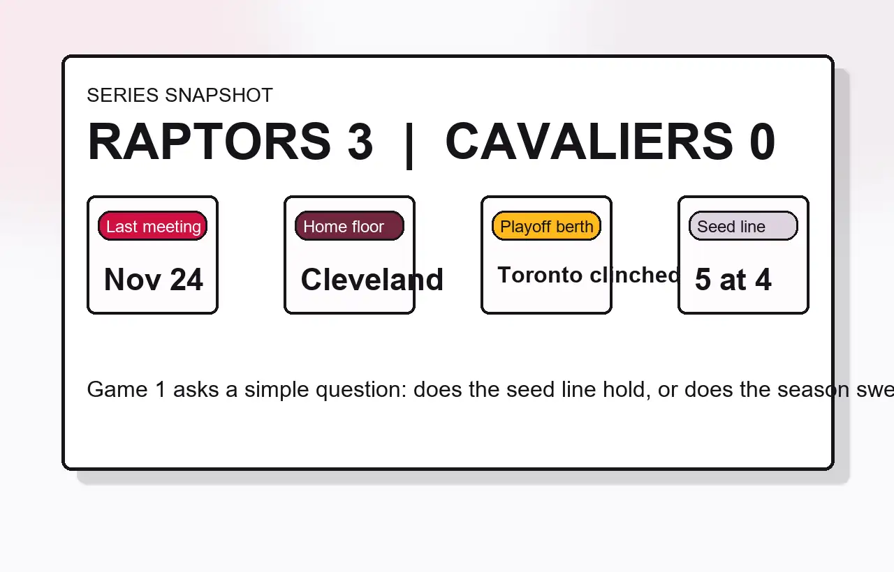

Toronto swept the season series
The Raptors went 3-0 against Cleveland during the regular season, even though the teams have not played since November 24.
Toronto and Cleveland open their first-round series on Saturday, April 18, 2026, at Rocket Arena. Cleveland has the higher seed and home floor. Toronto brings a stronger recent note into the matchup after clinching the fifth seed and finishing 3-0 against the Cavaliers in the regular season.
The useful angle here is the tension between the seed line and the matchup history. Cleveland earned the No. 4 seed and gets Game 1 at home. Toronto arrives as the No. 5 seed after beating Brooklyn 136-101 in the finale to clinch its first playoff berth in four seasons, and the Raptors swept the season series 3-0.
That makes this a better preview topic than a generic bracket page. Game 1 is not just about who is seeded higher. It is about whether Cleveland resets the matchup on its own floor or whether Toronto carries its regular-season read straight into the series.

The Raptors went 3-0 against Cleveland during the regular season, even though the teams have not played since November 24.
The Cavaliers finished fourth in the East at 52-30 and start the series at Rocket Arena.
Toronto reached the playoffs by routing Brooklyn on April 12, which gives the team a fresh momentum angle entering the series.